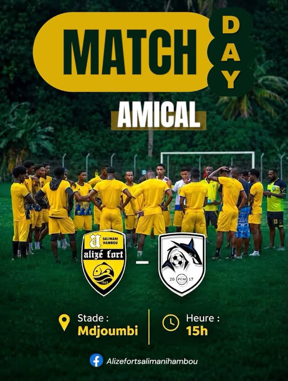
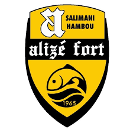
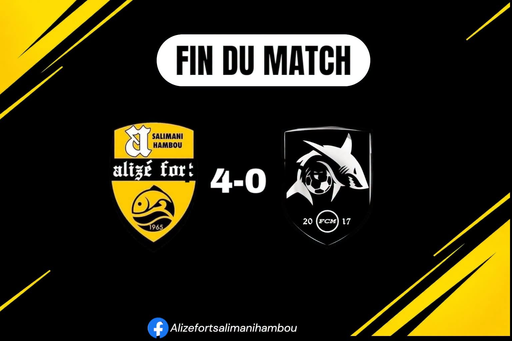
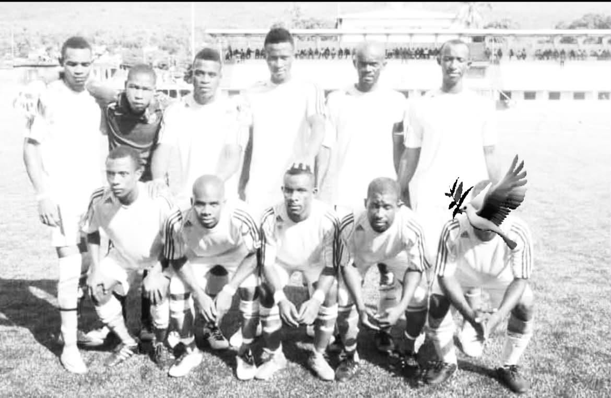

28 septembre 2026Affiche officielle : Alizé Fort vs FC Malouzini
Affiche officielle de notre premier match amical de préparation face au FC Malouzini.

Ndo walozi
CLUB DE FOOTBALL — SALIMANI HAMBOU
Retrouvez toute l'actualité de notre club, les résultats, le calendrier du championnat et les joueurs qui défendent nos couleurs.
Saison 2026/2027
Championnat de Ngazidja — Saison 2026/2027
Saison 2026/2027 — Alizé Fort
Retrouvez les nouvelles et les moments importants de la vie du club.

28 septembre 2026Affiche officielle de notre premier match amical de préparation face au FC Malouzini.

4 octobre 2026Pour notre premier match amical de préparation, Alizé Fort s'impose sur le score de quatre buts à zéro face au FC Malouzini. Une belle prestation collective pour lancer la saison !

8 octobre 2026C'est avec une profonde tristesse que le club Alizé Fort rend hommage à Ali Idi, ancien joueur et capitaine de notre équipe. Nos pensées accompagnent sa famille, ses proches et tout le village de Salimani Hambou.
Retrouvez les actualités et les informations du club sur nos réseaux sociaux.